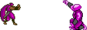
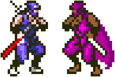
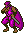
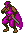
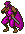

Aeons ago, the last battle between the mightiest creatures on Earth took place. As the story is told, one perished while the other was sent to a different dimension.
Thousands of years later, three battles were fought for the fate of the world between the two clans who followed the noble Dragon and the evil Demon. To the world's relief, the battles were all won by the noble Ninja Dragon.
Thousands of years later, three battles were fought for the fate of the world between the two clans who followed the noble Dragon and the evil Demon. To the world's relief, the battles were all won by the noble Ninja Dragon.
The one creature able to escape the fury of the Ninja Dragon was the evil Lord Ashtar. Shamed and powerless, yet hungry for vengeance, he used the ancient Scrolls of Darkness to restore the powers of Darkness to the lifeless body of the returning Demon. He never expected what would rise in its place.
THE DEMON NINJA

In casting the ancient spells of Chaos, Ashtar managed to resurrect his evil master, the Demon, to carry out his revenge. However, when the Demon rose, the power of the spells transformed the evil mass into the body of a humanoid creature, one with vast intelligence--and every last memory he ever had.
Twice slain by the Ninja Dragon, the returning entity also had only vengeance on his mind. This new Demon Ninja proceeded to plan his
Twice slain by the Ninja Dragon, the returning entity also had only vengeance on his mind. This new Demon Ninja proceeded to plan his
revenge, using what only Ashtar managed to possess over all the rest of the Demon Clan...patience.
The Demon Ninja used his power to bless Ashtar to full strength, returning to him the broken Sword of Chaos, as well as resurrecting the rest of his slain clan; the Jaquio, his champion Malth, and A. Foster! Thinking them promising from what they could have accomplished, the Demon Ninja even resurrected the sinister H.P. Clancy and Foster's bio-noid Ninja Dragon. Using these newly-restored minions, he and Ashtar silently spread their new numbers all over the world, taking it by force all at once upon a special moment.
The Demon Ninja used his power to bless Ashtar to full strength, returning to him the broken Sword of Chaos, as well as resurrecting the rest of his slain clan; the Jaquio, his champion Malth, and A. Foster! Thinking them promising from what they could have accomplished, the Demon Ninja even resurrected the sinister H.P. Clancy and Foster's bio-noid Ninja Dragon. Using these newly-restored minions, he and Ashtar silently spread their new numbers all over the world, taking it by force all at once upon a special moment.

...the home of the Angel...
As his number spread, the Demon Ninja constructed a Throne of Death within a newly-built "Palace of Demons," then fashioned a new blade from a dead limb into a powerful Demon Sword to counter Ryu's Dragon Sword. From there, he took his place upon his new throne and proclaimed himself the "Emperor of Darkness," having only to plant the seed of his plot, and wait for the Ninja Dragon to come to him...and meet his death!
DEMON NINJA
MOVES
MOVES

Run

DEMON NINJA
BASICS
BASICS

Split Kick

Foot Sweep
Demon Sword

Cyclone
Spin Kick
Spin Kick
DEMON NINJA
POWERS
POWERS
DEMON NINJA
ARTS
ARTS

Demon Streak

Demon Scroll
*Ninja Gaiden, Ninja Gaiden 2: Dark Sword of Chaos, and Ninja Gaiden 3: Ancient Ship of Doom, are trademark and copyright property of Tecmo Inc. Display of the images on this site are for ENTERTAINMENT PURPOSES ONLY!
I, the Guardian, am not for profit in the creation of this website and make absolutely no money for it. I do not work for Tecmo Inc., nor am I affiliated with Microsoft or Nintendo. I am simply an enthusiast of the Ninja Gaiden Series.
I, the Guardian, am not for profit in the creation of this website and make absolutely no money for it. I do not work for Tecmo Inc., nor am I affiliated with Microsoft or Nintendo. I am simply an enthusiast of the Ninja Gaiden Series.